The pad
The pad is how you play without a keyboard. It's the lower part of the app, and it's inside the plugin too. Seven modes, one key, and nothing to plug in.
Which mode do I use?
Seven modes, one bar. Pick by what you want to do. Each card opens that mode's section.
 LanesSingle notes in a key, in columns.Use it when you want a melody or a bass line, with slides and bends.
LanesSingle notes in a key, in columns.Use it when you want a melody or a bass line, with slides and bends.
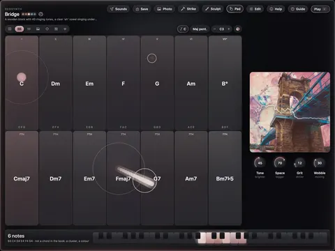
ChordsA whole chord under each finger.Use it when you want harmony without knowing chord shapes.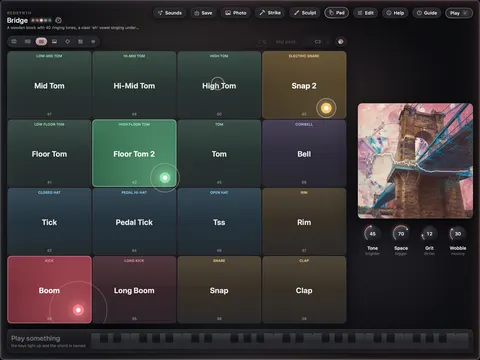
DrumsSixteen pads of a synthesized kit.Use it when you want a beat, or to record a drum loop. PhotoThe photo itself is the pad.Use it when you've just added a photo and want to explore it.
PhotoThe photo itself is the pad.Use it when you've just added a photo and want to explore it.
 Touch FXAn effect that lives under your finger.Use it when something else is playing: a keyboard, or a loop.
Touch FXAn effect that lives under your finger.Use it when something else is playing: a keyboard, or a loop.
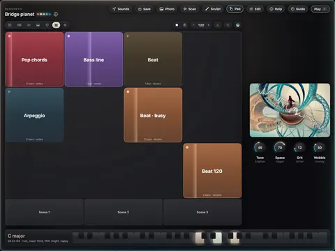
LoopsLoops that start on the next bar.Use it when you want to record a part and play over it. SamplesSixteen pads of sounds you recorded or imported.Use it when you want to chop up your voice, a beat or a field recording.
SamplesSixteen pads of sounds you recorded or imported.Use it when you want to chop up your voice, a beat or a field recording.
Step-by-step: record a beat, your first sample pad, chords from a photo, Touch FX with keys.
Where your fingers come from
iPhoneiPad The screen
- Up to ten fingers at once.
- iPhone Held upright, the pad fills the lower part of the screen and its modes run along the bottom, under your thumbs. Turn the phone on its side and the pad fills the screen; the four knobs are in a drawer behind the sliders button.
- How hard a note plays comes from how much of your fingertip lands. A light fingertip is a small dot and a soft note. A firm landing spreads it and plays louder.
- An Apple Pencil plays by its force, and pushing harder while you hold a note swells it.
Mac The trackpad
- The whole trackpad becomes the pad, several fingers at once.
- Rest the pointer over the pad first. The Mac sends trackpad touches to whatever is under the pointer.
- Better: press Hold the pointer (⌘⇧T). The pointer hides and stays put while you play. Esc frees it.
- How hard comes from where on the pad your finger lands, and on a Force Touch trackpad, pressing deeper swells the note. A hard press also brings in a wash of reverb and eases it out.
- A mouse works as one finger.
Pad or keys
The Pad button (⌘⇧K) swaps the pad for an on-screen keyboard and back. A MIDI keyboard plays alongside either one. See MIDI keyboards.
The key
The buttons beside the mode bar set the notes the pad offers, so you can't hit a wrong one.
| Button | Sets |
|---|---|
| The note name | The root: the home note of the key. |
| The scale | Chromatic, Major, Natural minor, Major pentatonic, Minor pentatonic, Blues or Dorian. |
| − and + | The octave at the pad's left edge. |
| Steps or Glide | Steps: sliding sideways lands on the next note. Glide: it bends smoothly between them. |
| The coloured dot | The pad's colours. See below. |
New to scales? Start with Major pentatonic. Five notes, and every one sounds right with every other.
The pad's colours
The small coloured dot at the end of the bar, after Steps, opens Pad colours. It changes the light of the notes, the cells and your fingers' trails. It doesn't change the sound.

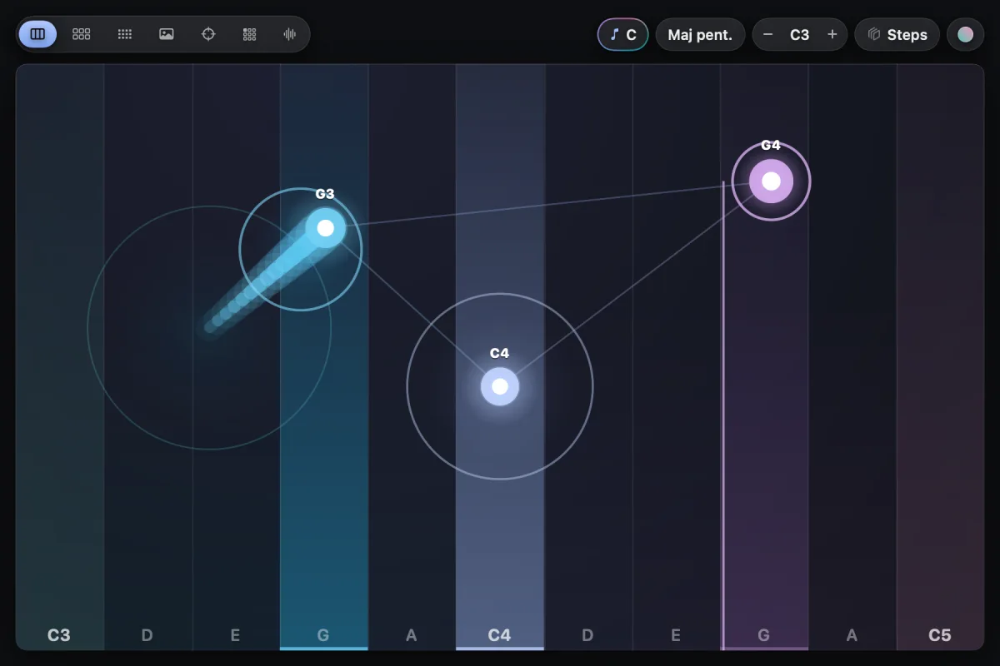
| Scheme | The pad's light |
|---|---|
| Photo | The photo's own colours, as the pad has always been. The default. |
| One colour | One colour you pick. The key's home note is brighter. |
| Gradient | Two colours you pick, low notes to high. It starts teal to pink. |
| Mono, Amber, Phosphor, Ice, Brass, Signal | Ready-made looks: white light, an old amber screen, green phosphor, cold blue, brass to pale gold, a red LED. |
- Every scheme but Photo runs low notes at one end to high notes at the other, so the pad reads as one instrument, not a rainbow. In Photo mode the photo still shows under your fingers.
- Glow: how bright the lights are. Trail: how long a finger's trail lasts, from off to nearly two seconds. Usual glow and trail puts both back.
- The app and the plugin each remember their own choice.
Lanes
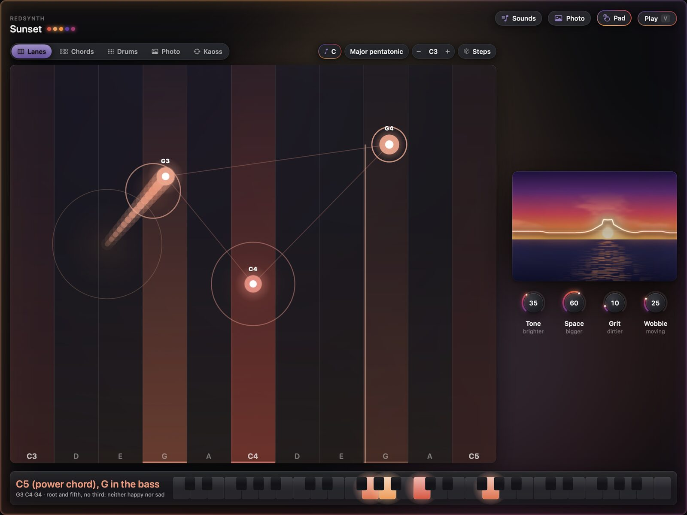
The pad is columns of the scale, low on the left, high on the right. The root's lanes are lit and named.
- Touch a lane: its note plays.
- Slide up: the note gets brighter.
- Slide sideways: step to the next lane, or bend into it (Steps or Glide).
- Press: the note swells.
- Several fingers make a chord, and the strip below names it.
Chords
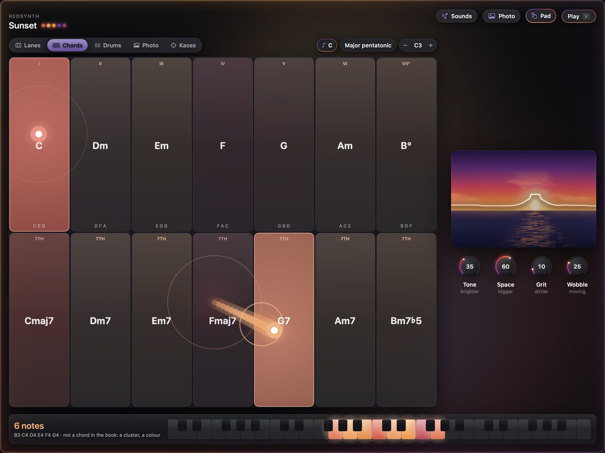
Every cell is a whole chord from your key. Simple three-note chords are in the top row; richer seventh chords are underneath. Each column is one step of the scale, and the home chord is tinted.
- Touch a cell: the chord plays.
- Drag across a cell: it strums.
- Slide into the next cell: the notes the two chords share keep ringing, and only the others change.
Drums
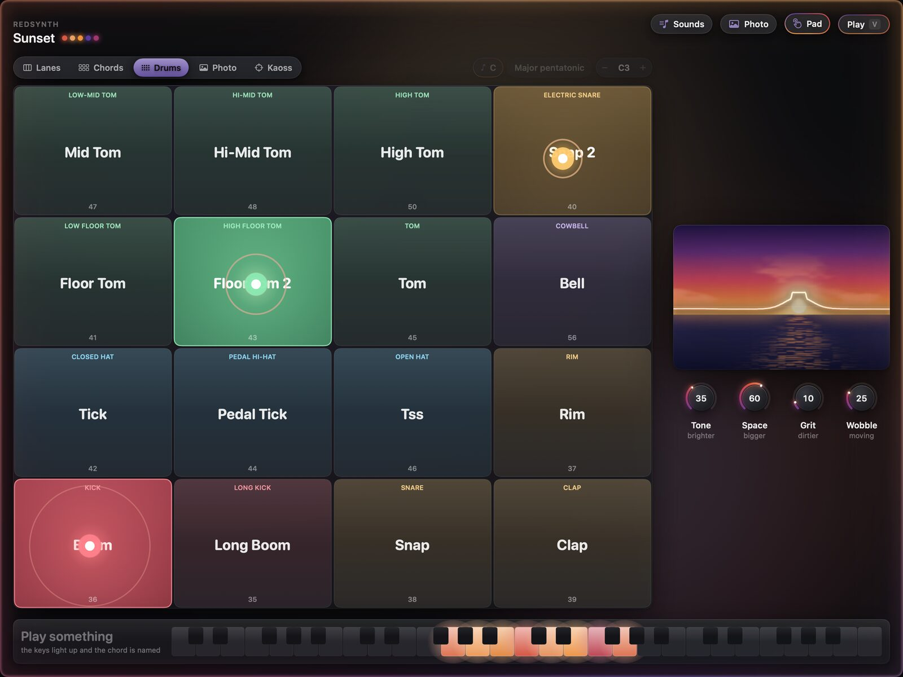
Sixteen pads of a synthesized drum kit, the kick at the bottom left. Touch higher on a pad to hit louder. The kit is nine drums made from scratch, no recordings: Boom, Long Boom, Snap, Clap, Tick, Tss, Tom, Bell and Rim.
The drums play alongside the synth, so one hand can keep a beat while the other plays the photo from a keyboard.
Photo
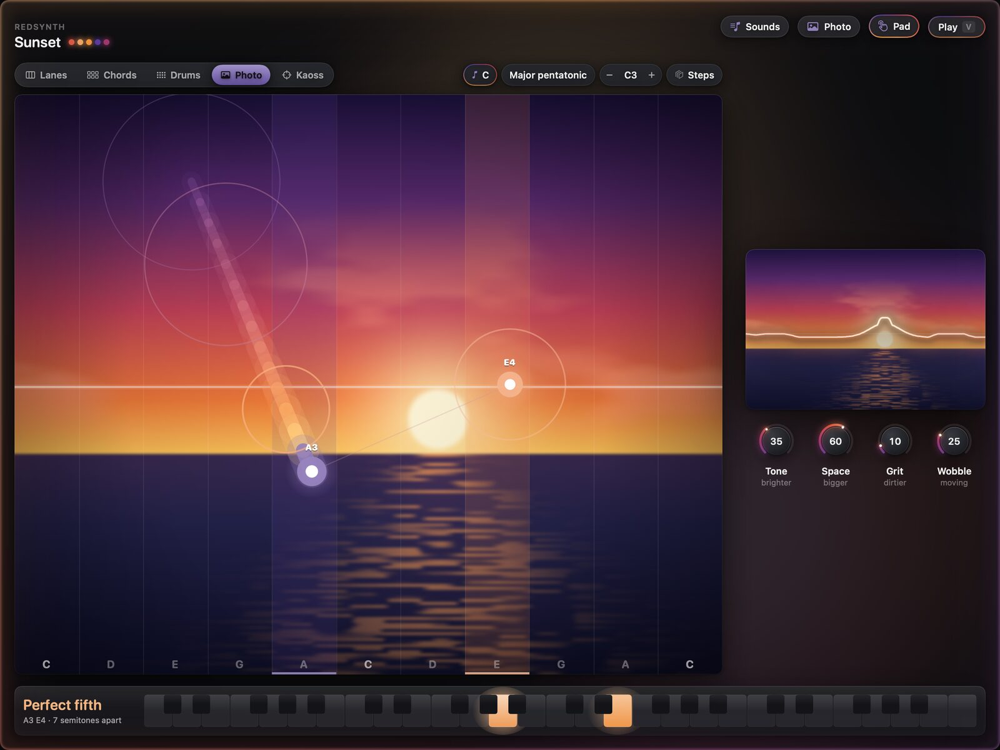
The photo is the pad.
- Left to right is the note, in your key.
- Up and down is the row of the photo you hear. The scan line follows your finger.
- Each finger leaves a trail in the photo's colours.
This is the mode to try first with a new photo. Slide slowly up through a busy part of the picture while holding a note.
Touch FX
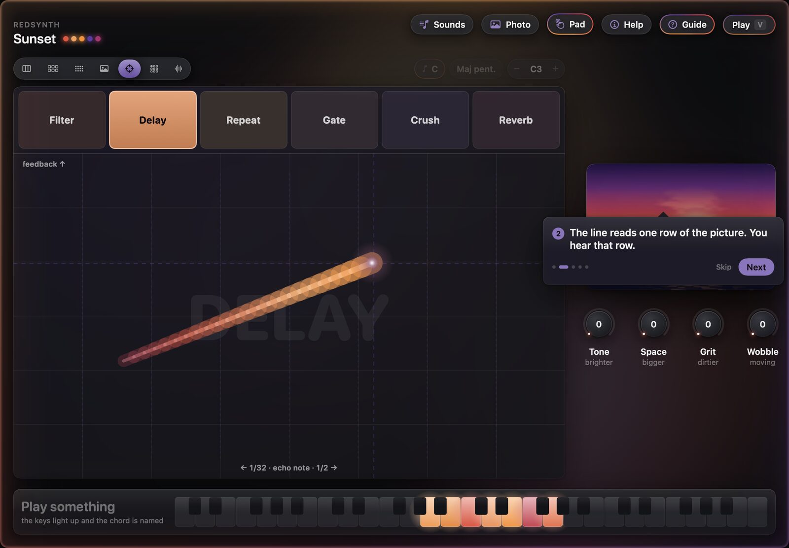
Six effect tiles along the top, one big pad underneath. Pick an effect, then touch the pad. The effect is on only while your finger is down. Lift, and it eases out. Play notes from a keyboard, a loop, or your other hand.
| Effect | Left to right | Up and down |
|---|---|---|
| Filter | Left of the middle muffles the highs. Right of it thins out the lows. The middle is untouched. | How sharp the filter's edge is. |
| Delay | The echo's length, in notes of the tempo. | How many echoes. |
| Repeat | How long a slice of sound gets caught and looped. | Bends the slice's pitch, up to an octave either way. |
| Gate | How fast the sound is chopped on and off. | How deep the chop goes. |
| Crush | Lower sample rate: duller, ringing. | Fewer bits: rougher. |
| Reverb | The room's size. | How loud the room is. |
Delay, Repeat and Gate follow the tempo, so they stay in time with loops and with your music app.
Loops
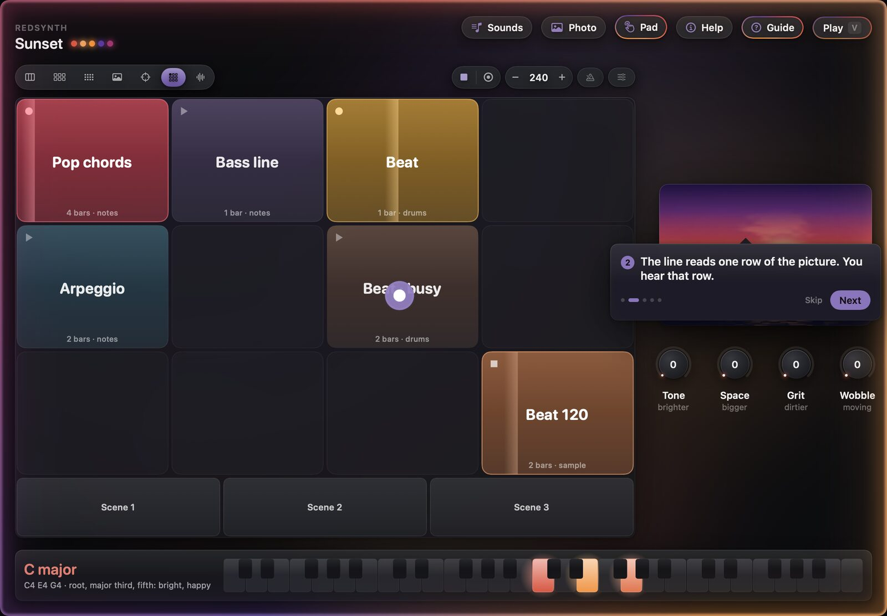
A grid of loops you launch. Each column plays one loop at a time.
- Tap a cell: it starts at the next bar line. The ring fills while it waits.
- Tap it again: it stops at the bar line.
- The strip at the bottom launches a whole row at once: a scene.
Five starter loops are included. The rest are yours to record.
The transport
Above the pad in Loops and Samples: play and stop, record, the tempo with − and +, the metronome, and Edit. On its own the app runs at its own tempo. Inside a music app it follows the song's.
Recording a loop
- Choose what to record into. Record goes into the loop chosen in the Loop Editor (a starter loop is copied first), or into a new notes loop if none is chosen. For a drum loop, open the Loop Editor, tap New and choose a length under Drums first. A drum loop only takes the drums; a notes loop takes everything else.
- Press record (⌘⇧R on a Mac). If nothing is playing you get a count-in of one or two bars of click. The count-in isn't recorded.
- Play: the pad in any mode, the on-screen keys or a MIDI keyboard all go in. Recording carries on while you switch modes.
- Each time the loop comes round, what you play is added on top. The last pass can be undone.
- Press record again to end the take. To hear the loop again, open the Loop Editor, tap Assign to a cell, and launch that cell.
The whole thing, start to finish: Record a beat and play over it.
The Loop Editor
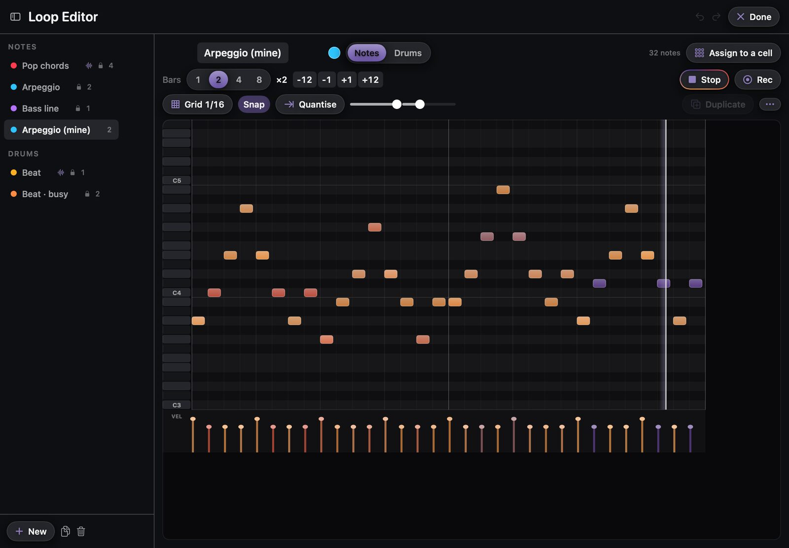
Edit (⌘L) opens it.
| You do | It does |
|---|---|
| Tap empty space | Draws a note. |
| Drag a note | Moves it. Drag its right edge to change its length. |
| Drag across empty space | Selects several. |
| Hold a note still, or double-tap it | Deletes it. |
| Pinch, or the slider | Zooms. |
| Bars 1 · 2 · 4 · 8, ×2 | The loop's length in bars; ×2 doubles it. |
| Grid, Snap | The note grid, from quarter notes to 32nds, straight or triplet. |
| Quantise | Pulls notes onto the grid, by as much as the slider says. |
| −12, −1, +1, +12 | Moves the notes down or up. |
| Duplicate (⌘D), copy, paste | What they say. |
| Play (Space) | Hears just this loop. |
| Assign to a cell | Puts the loop on the grid. |
Undo and redo work on everything (⌘Z, ⇧⌘Z). The starter loops are locked; Make it mine copies one so you can change it.
Samples
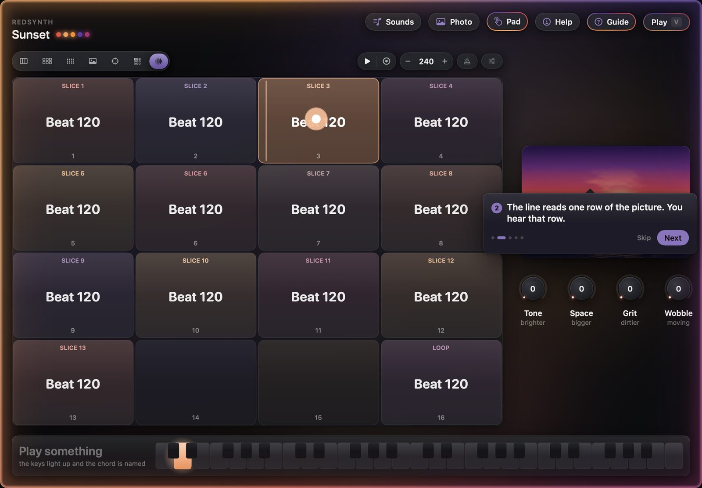
Record or import a sound, cut it up, and play the pieces on sixteen pads. Samples go through the same effects as the synth, so everything sits in one mix.
Getting a sound in
- Record from the microphone, in the app. The first time, your device asks permission. Record 1, 2, 4 or 8 bars at the tempo, after the count-in, or record until you press Stop. Recordings stay on your device.
- Import (⌘I) a WAV, AIFF, MP3 or M4A file, up to 60 seconds. On a Mac you can drop a file on the editor.
The Sample Editor
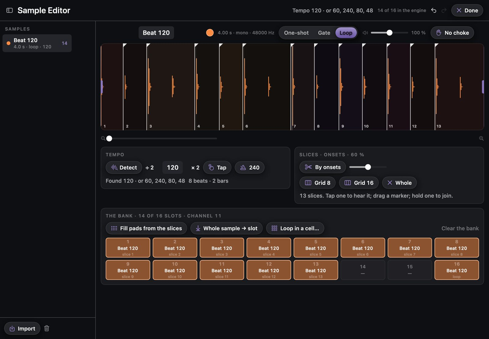
| Part | What it does |
|---|---|
| The waveform | Drag the handles at each end to trim. Tap a slice to hear it. |
| Tempo | Detect finds the sample's tempo and offers half and double. Or tap it in, type it, or use the app's tempo. Trim to whole beats tidies the ends. |
| Slices | By onsets cuts at each hit; the slider sets how sensitive. Grid 8 and Grid 16 cut evenly. Whole is no cuts. Drag a marker to move it, double-tap to split, hold a marker to join. |
| One-shot · Gate · Loop | One-shot plays to the end. Gate plays while you hold. Loop goes round, and stays in time with the tempo. |
| Gain, choke group, colour | Loudness; which pads cut each other off (an open hat silenced by a closed one); the pad's colour. |
| The bank | The sixteen slots. Fill pads from the slices lays the slices out in order. Whole sample → slot puts the lot on one pad. Loop in a cell sends a loop to the Loops grid. |
Nothing gets stuck
Lifting your finger ends its note. So does changing mode, changing key, hiding the pad, switching to another app, and a system gesture that interrupts a touch. If a note ever does hang, All Notes Off (⌘.) stops everything, loops included.